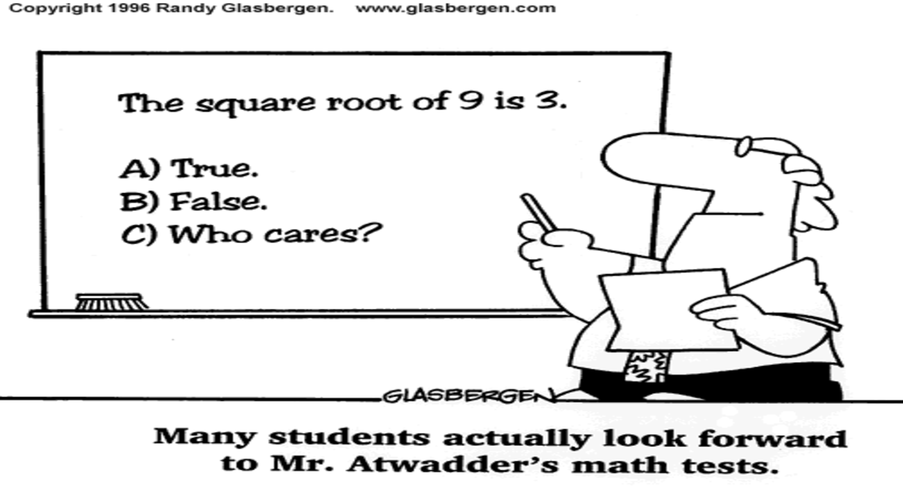

PEJMAN SANAEI
Instructor
Graduate:
Advanced Topics in Applied Math: Modeling and Experiment in Fluid Dynamics (Math-GA 2840-004), NYU, Spring 2019.
Undergraduate:
Calculus I (Math 170), NYIT, Spring 2020 (Evaluation score: ).
Differential Equations (Math 320), NYIT, Fall 2019 (Evaluation score: 4.9/5).
Partial Differential Equations (Math 263), NYU, Spring 2019 (Evaluation score: 4.8/5).
Partial Differential Equations (Math 263), NYU, Fall 2018 (Evaluation score: 4.7/5).
Numerical Analysis (Math 252), NYU, Spring 2018 (Evaluation score: 4.7/5).
Numerical Analysis (Math 252), NYU, Fall 2017 (Evaluation score: 4.5/5).
Math For Economics II (Math 212), NYU, Summer 2017 (Evaluation score: 3.9/5).
Calculus III (Math 211), NJIT, Spring 2017 (Evaluation score: 3.6/4).
Calculus II (Math 112), NJIT, Fall 2016 (Evaluation score: 3/4).
Linear Algebra (Math 337), NJIT, Fall 2015 (Evaluation score: 3.1/4).
Differential Equations (Math 222), NJIT, Spring 2015 (Evaluation score: 3.3/4).

Solution Manual
An Introduction to Numerical Analysis, Kendall E. Atkinson.
Partial Differential Equations, J. Kevorkian.
Asymptotic Analysis, J. D. Murray.
Differential Dynamical Systems, J. D. Meiss.
Complex Variables Introduction and Applications, M. J. Ablowitz and A. S. Fokas.